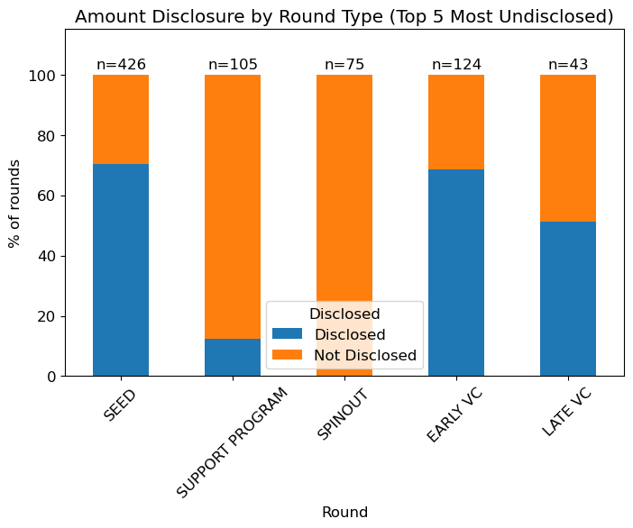
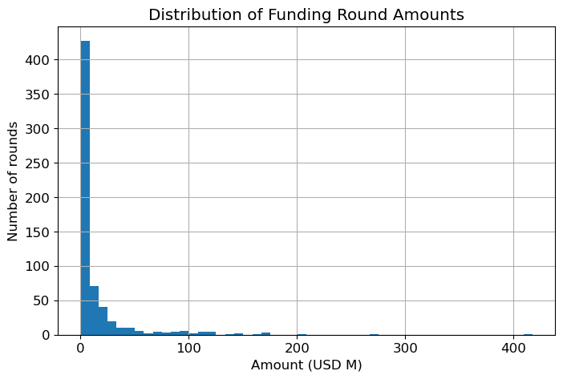

Predicting Quebec Startup Funding Round Size
What predicts how much a Quebec startup raises in a single round, and does having a government investor at the table matter?
Benchmarking a round against its peers
Founders and investors constantly ask “is this round big or small for a company like ours?”. I framed it as a
supervised regression problem: predict the disclosed amount of a funding round (Amount (USD M))
from company and round characteristics. The goal is a benchmarking tool for comparing a prospective round with similar Quebec
companies, not a standalone decision-making tool.
I also wanted to test one specific belief: that rounds with a government or semi-public investor are bigger.
1,141 rounds, and almost half without an amount
The data is a Dealroom.co export of funding rounds for Quebec-headquartered companies, dated 2021 to the present (exported 16 September 2026). I flagged rounds with at least one government or semi-public investor by hand. The raw data is proprietary, so it is not published here; everything below is aggregated.
Disclosure is not random. 520 of 1,141 rounds (45.6%) have no disclosed amount, and missing amounts concentrate in early-stage and hard-to-access round types: Support Program and Spinout rounds are disclosed less than 15% of the time, against about 70% for Seed and Early VC. The modeling sample of 621 rounds therefore skews toward later-stage, better-documented rounds.

Round sizes are heavily right-skewed. Most disclosed rounds are a few million dollars, but a handful of mega-rounds (up to $417.5M) stretch the distribution. That is why I report RMSE alongside the more outlier-robust MAE, and why I used median rather than mean imputation.

From a linear baseline to a tuned forest
- Preparation: dropped rounds without a disclosed amount, built
Government Backed,Semi-PublicandPublicly Backedflags, and did a stratified 80/20 train/test split (496 / 125 rounds). - Preprocessing pipeline: median imputation and scaling for numeric features; most-frequent imputation and one-hot encoding for categorical features, in a single
ColumnTransformer. - Model comparison: Linear Regression, Decision Tree and Random Forest, scored by 5-fold cross-validated RMSE.
- Tuning and evaluation:
RandomizedSearchCVon the Random Forest, then a single evaluation on the held-out test set with a bootstrap 95% confidence interval for RMSE.
Cross-validated error by model (lower is better)
Show data table
A $19.3M test error, driven by stage and history
On the held-out test set, the tuned Random Forest reached an RMSE of $19.30M and an MAE of $7.56M (bootstrap 95% CI for RMSE: $8.83M–$29.96M). Test RMSE is close to the cross-validated $20.67M, so the model is not overfitting the training folds.
Predicted vs. actual round size on the test set, by actual round size
Show data table
What drives the prediction
Growth stage (especially “late stage”, the single strongest feature), launch year, total rounds raised and round type
dominated feature importance. Publicly Backed did not make the top 15.
Random Forest feature importance
Show data table
For founders and VCs
- Public backing is a marker of timing. Rounds with a government or semi-public investor have a median size roughly 4–5× larger ($10–11M vs. $2–2.2M). But once growth stage is in the model, backing adds little. Publicly backed rounds tend to happen later, and stage already explains size. This is association, not evidence that backing causes bigger rounds.
- Stage and track record set the benchmark. Where a company is in its growth and how many rounds it has already raised matter far more than who is in the round.
- Treat it as a range, not a point. A typical miss of about $7.6M, and larger misses on mega-rounds, make the model useful for “is this round in the normal range for a company like ours?”, not for pricing a specific deal.
Data explorer
Filter all 1,141 rounds by round type and public backing. Groups with fewer than 5 rounds are hidden, and a median is only shown when at least 5 disclosed amounts back it. 2026 is a partial year (data exported in September).
Quebec funding rounds by year
Show data table
What this can’t tell you
- Non-random missingness: about 46% of amounts are undisclosed, biasing the sample toward later-stage, better-documented rounds.
- Skew and sample size: a right-skewed target with a few very large rounds, and a modest sample of 621 disclosed rounds given that skew.
- Possible look-ahead leakage: growth stage and total rounds number are measured as of the data export, not at the time of each round.
- Sparse industry encoding: multi-label industry tags produced many sparse one-hot columns rather than a clean encoding.
- No causal claim: there is no random assignment or control region, so associations (e.g. public backing) are not causal effects.
Structure and several helper functions adapted from Aurélien Géron’s end-to-end ML project in Hands-On Machine Learning. Built as Assignment 1 for Enterprise Data Science (McGill MMA).